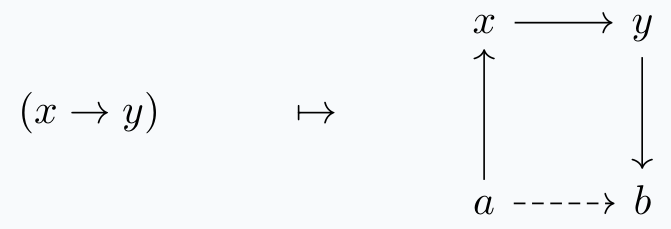
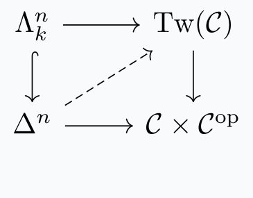
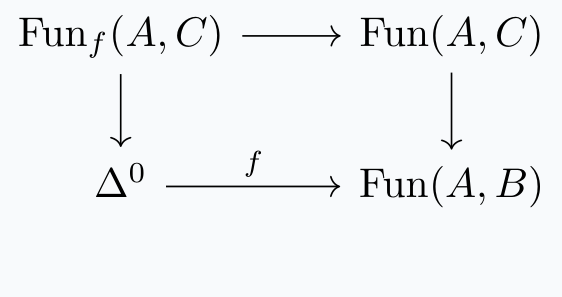

date: 03.10.2025
"Tell me who you walk with, and I will tell you who you are."
I give this talk as part of a reading seminar on Markus Land's Introduction to Infinity-Categories. I'm meant to cover sections 4.1: Terminal and Initial Objects and 4.2: the Yoneda Lemma for \(\infty\)-categories. These notes follow the book content-wise but are a bit narratively different and prioritize intuitive understanding; the interested reader should refer to the book for full notational rigor.
First, I give the notions of initial and terminal objects of \(\infty-\)categories. Following this, I construct the mapping space functor \(\text{map}_{\mathcal{C}}(-,-)\) for an \(\infty-\)category \(\mathcal{C}\) and rephrase it via the twisted arrow construction. Finally, I state and sketch the proof the the Yoneda lemma.
Notation: \(\mathcal{C}\) an \(\infty-\)category, \(x,y\) objects in \(\mathcal{C}\).
Definition. The object \(x\) is initial if for any \(y\), the mapping space \(\text{map}_{\mathcal{C}}(x,y)\) is contractible, and \(x\) is terminal if for any \(y\), \(\text{map}_{\mathcal{C}}(y,x)\) is contractible.
Some first examples: the identity map at \(x\) is initial for \(\mathcal{C}_{x/}\) and terminal for \(\mathcal{C}_{/x}\). Notice that statements we make about initial objects will be true (maybe up to dual notions) for the terminal object in the opposite category.
Lemma. The following are equivalent:
For \(1-\)categories, the initial and terminal objects are unique up to unique isomorphism. The \(\infty-\)categorical analogue is for them to be subcomplexes which are contractible Kan. We can easily see that this is true, by the lifting problem characterization of initial and terminal objects in the above lemma.
Proposition. Let \(\mathcal{C}_{\text{term}}\) be the full subcategory spanned by all terminal objects. Then \(\mathcal{C}_{\text{term}}\) is either empty or a contractible Kan complex.
The following proposition is another useful characterization of initial and terminal objects.
Proposition. The object \(x\) is initial precisely when the map \(x:\Delta^0 \rightarrow \mathcal{C}\) is left-anondyne. Dually, \(x\) is terminal precisely when \(\Delta^0 \rightarrow \mathcal{C}\) is right-anondyne.
Instead of a proof I offer the following explanation. Notice that maps \(A \rightarrow B\) are left anodyne roughly when you can construct \(B\) by filling some left and inner horns of \(A\), up to replacement by some equivalent simplicial set with contractible things. In our case, the only (nondegenerate) horns in \(\Delta^0\) are left and right \(1-\)horns. So the map is left anondyne precisely when \(\mathcal{C}\) is equivalent to something which looks like a star-shaped graph centered at \(x\), with edges pointing out.
Very easily we see \(x\) is initial. The discussion for final objects is exactly dual.
Our goal now is to construct \(\text{map}_{\mathcal{C}}(-,-): \mathcal{C}^{\text{op}} \times \mathcal{C} \rightarrow \textbf{Spc}\) as a functor of \(\infty-\)categories. Let's first try to do this directly. It is clear what this map should be on the level of objects:
$$(x,y) \mapsto \text{map}_{\mathcal{C}}(x,y).$$ On the level of \(1-\)morphisms, take a map \((x,y) \rightarrow (a,b)\) in \(\mathcal{C}^{\text{op}} \times \mathcal{C}\). This comes from the maps \(a \rightarrow x\) and \(y \rightarrow b\) in \(\mathcal{C}.\)
This then induces a morphism of the mapping spaces:
$$\text{map}_{\mathcal{C}}(x,y) \rightarrow \text{map}_{\mathcal{C}}(a,b)$$

For higher simplices, since \(\textbf{Spc}\) is a trivial Kan complex, we can extend uniquely and coherently. This concludes the construction of the functor \(\text{map}_{\mathcal{C}}(-,-).\)
For the purposes of discussing Yoneda, it would help if we can phrase this functor as a fibration over \(\mathcal{C}^{\text{op}} \times \mathcal{C}.\) We do this via the following construction.
Definition. The twisted arrow category \(\text{Tw}(\mathcal{C})\) is the simplicial set defined by $$\text{Tw}(\mathcal{C})_n = \text{Hom}_{\text{sSet}}(\Delta^n \star (\Delta^n)^{\text{op}}, \mathcal{C})$$ and the inclusions \(\Delta^n \hookrightarrow \Delta^n \star (\Delta^n)^{\text{op}} \hookleftarrow (\Delta^n)^{\text{op}}\) gives the functor $$\text{Tw}(\mathcal{C}) \rightarrow \mathcal{C} \times \mathcal{C}^{\text{op}}.$$
The way to think about this simplicial set is that the \(n-\)simplices are copies of \(\Delta^{2n+1}\) in \(\mathcal{C}\). The face and degeneracy maps are determined by recognizing \(\Delta^{\{0,\ldots,n\}}\) as a simplex in \(\mathcal{C}\) and \(\Delta^{\{n+1,\ldots,2n+1\}}\) as a simplex in \(\mathcal{C}^{\text{op}}\). It is then clear what the functor is, also: just "projection".
Proposition. The functor $$\text{Tw}(\mathcal{C}) \rightarrow \mathcal{C} \times \mathcal{C}^{\text{op}}$$ is a right fibration. In particular, \(\text{Tw}(\mathcal{C})\) is an \(\infty-\)category.
Proof. We check that right and inner horns can be filled:

Notice that \(\Lambda_k^n\) in \(\text{Tw}(\mathcal{C})\) are simply \(\Lambda_k^n \star \Lambda_{n-k}^n\) in \(\mathcal{C}\). Our task is to fill this to a full simplex in \(\mathcal{C}\). Notice first that the bottom map fills the faces of the horns on each end.
So we are only missing
$$\{\text{the }k\text{-th face}\} \star \{\text{the }n-k\text{-th face}\}$$
and we can notice that this is composed of inner horns unless \(k=0\). Since \(\mathcal{C}\) is an \(\infty-\) category, we can fill inner horns.
Remark. One can check that the dual of the right fibration \(\text{Tw}(\mathcal{C}) \rightarrow \mathcal{C} \times \mathcal{C}^{\text{op}}\) corresponds to \(\text{map}_{\mathcal{C}}(-,-)\) via straightening-unstraightening.
Lemma. The composition \(\mathcal{C} \times \{x\} \rightarrow \mathcal{C}\times \mathcal{C}^{\text{op}} \rightarrow \text{Spc}\) which corresponds to \(\text{Tw}(\mathcal{C})_x\) is equivalent to the functor \(\text{map}_{\mathcal{C}}(-,x)\) which corresponds to \(\mathcal{C}_{/x}\).
In the book, the Yoneda lemma is a proposition.
Proposition. Let \(L:\mathcal{C} \rightarrow \text{Spc}\) be a functor. The canonical map $$\text{map}_{\text{Fun}(\mathcal{C}, \text{Spc})}(\text{map}_{\mathcal{C}}(x,-),F) \rightarrow F(x)$$ given by evaluation at \(\text{id}_x\) is an equivalence.
Proof. Suppose \(F\) corresponds to the left fibration \(p: \mathcal{E} \rightarrow \mathcal{C}\) via straightening-unstraightening. Then we can rewrite the map as $$\text{map}_{\text{Cat}_{\infty_{/\mathcal{C}}}}(\mathcal{C}_{x/}, \mathcal{E}) \rightarrow \mathcal{E}_x.$$
Now define, for \(f: A \rightarrow B\) map of \(\infty-\)categories and \(\mathcal{C} \rightarrow B\) a fibration, \(\text{Fun}_f(A,B)\) as the following pullback  Letting \(q\) denote the forgetful map \(\mathcal{C}_{x/} \rightarrow \mathcal{C}\) and rewrite the map as $$\text{Fun}_q(\mathcal{C}_{x/}, \mathcal{E}) \rightarrow \text{Fun}_{x}(\Delta^0, \mathcal{E}).$$ (This rewriting is somewhat nuanced; check book for details. The right hand side is by definition of the fibre.) This map is induced by \(x:\Delta^0 \rightarrow \mathcal{C}_{x/}\), which identifies the initial object. Recall that a previous proposition states that this map is left anodyne. Then a proposition in the book (3.2.18) about cocartesian fibrations (which \(q\) and \(p\) both are, since they are left fibrations) gives that the above map is an equivalence, as desired.
Last revised on 03.10.2025.